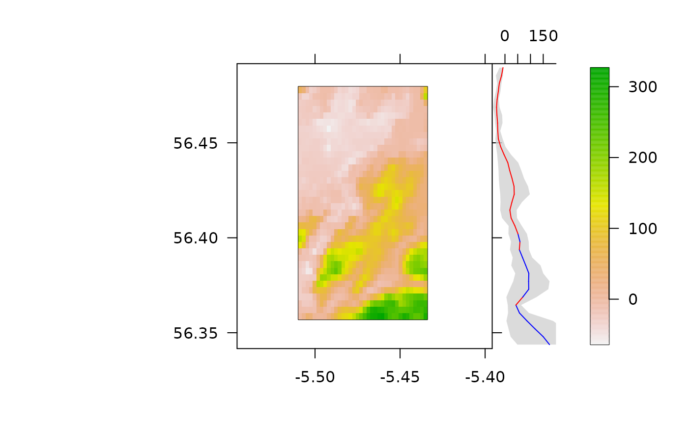
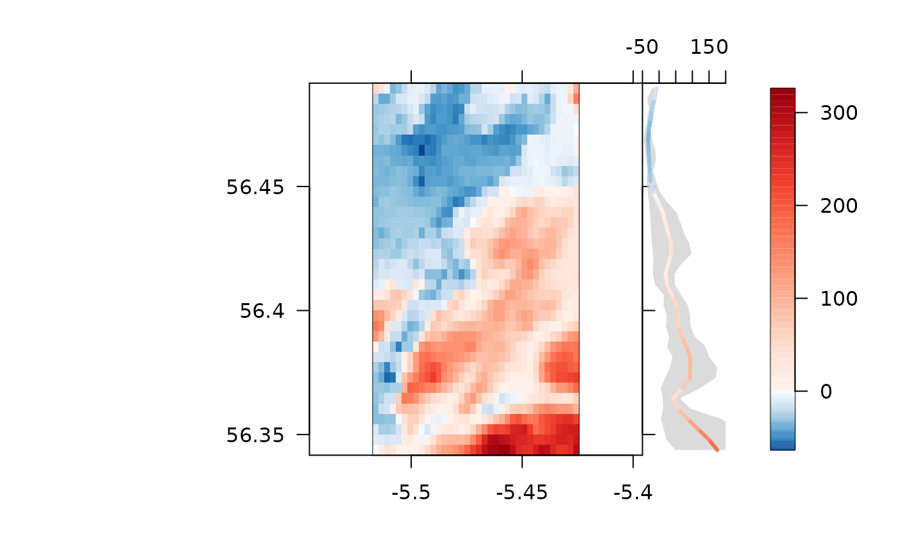
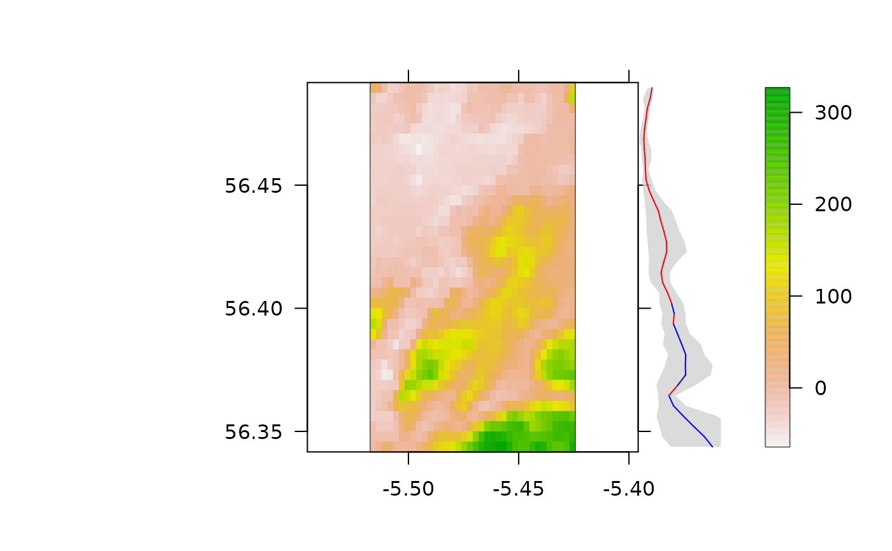
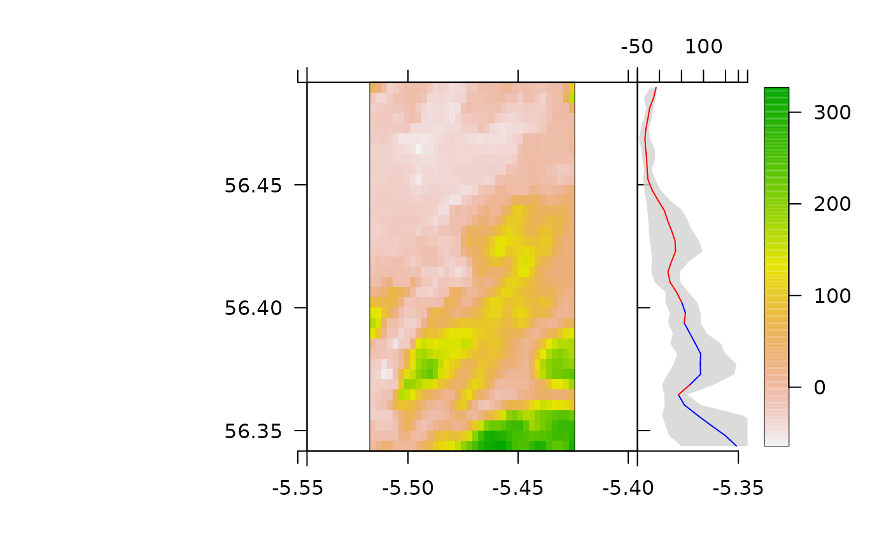

This function is designed to add summary latitudinal profiles alongside a plot of a raster. To implement the function, the plotted raster must be supplied (x) as well as a summary statistic, such as mean, via calc_fit that is used to summarise raster values across latitudinal bands (via summarise_by_lat). `Lower' and `upper' summaries, such as the 25th and 75th percentiles can also be calculated, if desired, via calc_lwr and calc_upr. A plot with these summaries (represented by a `fitted' line and surrounding variability envelope, if applicable) is then added to the current plot. The properties of the added plot are controlled via standard prettyGraphics's arguments, such as pretty_axis_args. The graphical properties of the `fitted' line and surrounding envelope are controlled with named lists of arguments, via add_fit and add_ci. Placement is controlled by specifying the x and y locations on the current plot at which to add the new plot, via x_at and y_at.
add_profile_lat(
x,
calc_fit = mean,
calc_lwr = function(x) stats::quantile(x, 0.25),
calc_upr = function(x) stats::quantile(x, 0.75),
xlim = NULL,
ylim = NULL,
pretty_axis_args = list(side = 3:2, axis = list(list(), list(lwd = 0, labels =
FALSE))),
axes = TRUE,
x_at = NULL,
y_at = ylim,
add_fit = list(),
add_ci = list(col = scales::alpha("lightgrey", 0.8), border = FALSE),
...
)A raster.
A function that summarises the values of x across latitudinal bands, returning a single number for each band (see summarise_by_lat).
(optional) Functions that calculate `lower' and `upper' summaries of the values of x across latitudinal bands.
Axis control arguments for the added profile. xlim and ylim control axis limits. If un-supplied, ylim is defined to be the latitudinal range of x. pretty_axis_args is a named list of arguments, passed to pretty_axis for finer control. Arguments to the control_axis argument of pretty_axis can also be passed via .... Under the default options, an x axis is added at the `top' of the plot while the y axis is not shown. axes is a logical input that defines whether or not to add axes at all (axes = FALSE suppresses these). However, note that may still be necessary to specify ylim (and y_at) such that that the profile is added correctly alongside the plotted raster.
Numeric vectors of length two that specify the x and y positions, on the current plot, for the four corners of the added plot. If un-supplied, the two x_at coordinates are taken as the maximum x limit of x and the same value plus 25 percent of the difference between the maximum and minimum x limits. y_at is taken from ylim which, if un-supplied, is defined by the y limits of x.
Named lists of arguments, passed to add_lines and polygon to customise the appearance of the `fitted' line and, if necessary, the surrounding variability envelope defined by calc_lwr and calc_upr. For the fitted line, the y2 argument is automatically supplied to add_lines so that the line can follow the same colour scheme as the raster, if supplied (see Examples).
The function adds a latitudinal summary profile to an existing plot of a raster.
#### Example (1): Implement the function using default options
pretty_map(dat_gebco, add_rasters = list(x = dat_gebco))
#> prettyGraphics::pretty_map() CRS taken as: '+proj=longlat +datum=WGS84 +no_defs'.
add_profile_lat(x = dat_gebco)

#### Example (2): Control the properties of the 'fitted' line and/or envelope
## E.g. Colour the 'fitted' line following the raster's colour scheme
zlim <- raster::cellStats(dat_gebco, "range")
col_param <- pretty_cols_split_heat(zlim)
pretty_map(dat_gebco,
add_rasters = list(x = dat_gebco, zlim = zlim,
breaks = col_param$breaks, col = col_param$col))
#> prettyGraphics::pretty_map() CRS taken as: '+proj=longlat +datum=WGS84 +no_defs'.
add_profile_lat(x = dat_gebco,
add_fit = list(breaks = col_param$breaks, cols = col_param$col, lwd = 3))

#### Example (2) Control axes
# E.g. Control via pretty_axis_args
pretty_map(dat_gebco, add_rasters = list(x = dat_gebco))
#> prettyGraphics::pretty_map() CRS taken as: '+proj=longlat +datum=WGS84 +no_defs'.
add_profile_lat(x = dat_gebco,
pretty_axis_args = list(side = 3:4))
# E.g. Suppress axes
pretty_map(dat_gebco, add_rasters = list(x = dat_gebco))
#> prettyGraphics::pretty_map() CRS taken as: '+proj=longlat +datum=WGS84 +no_defs'.
add_profile_lat(x = dat_gebco, axes = FALSE)

#### Example (3) Control profile placement
axis_ls <- pretty_map(dat_gebco, add_rasters = list(x = dat_gebco))
#> prettyGraphics::pretty_map() CRS taken as: '+proj=longlat +datum=WGS84 +no_defs'.
add_profile_lat(x = dat_gebco,
x_at = c(axis_ls[[1]]$lim[2], axis_ls[[1]]$lim[2] + 0.05),
y_at = axis_ls[[2]]$lim)
